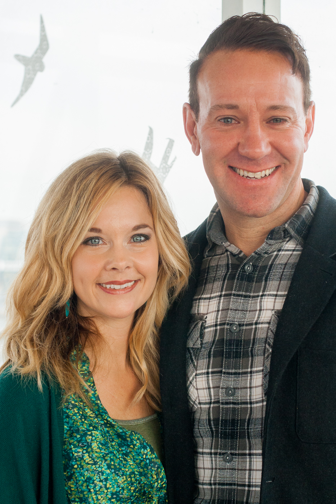

<link rel="stylesheet" href="http://cdn.leafletjs.com/leaflet-0.6.4/leaflet.css" />
<!--[if lte IE 8]>
    <link rel="stylesheet" href="http://cdn.leafletjs.com/leaflet-0.6.4/leaflet.ie.css" />
<![endif]-->

<section>

<!-- 
	<h2>Why the growing prayer movement in the Netherlands will change the world</h2>
 -->

	<aside class="left wide stick-out">
		
		<p class="caption">Murray and Deborah Hiebert</p>
	</aside>

	<p class="quote">It's easy at times to see what God is doing in one small location but when you get a glimpse of what God is doing around the globe, it grips you at a deeper level.</p>

	<p>Murray and Deborah Hiebert, from <a target="_blank" href="http://www.ihopkc.org/">IHOP Kansas City</a>, recently visited YWAM Amsterdam for our “Going Deeper” seminar. We used this chance to talk with them about their excitement for 24/7 prayer and worship, how they see God moving in Amsterdam, and what they expect for the future.</p>

	<aside class="wide backgrounded">

		<h3>Forerunner Music Academy</h3>

		<p>The students in the FMA undergo rigorous musical study with classes on theory, group lessons and individual lessons. The students focus throughout the week is practicing and worshipping God. In addition they attend theology classes where they memorize Bible verses, then incorporate those verses into songs practiced in sessions with their worship teams.</p>

		<p>Murray: “One of the phrases that we like to use is that we are a ‘singing seminary’. One of the things that we love to do is to sing the word. [...] We believe when we sing the word, the word takes root in our hearts in a deeper way.”</p>

		<video controls>
			<source src="video/ihop/fma.mov" type="video/mp4" />
			Your browser does not support the video.
		</video>

	</aside>

	<p>The Hieberts role in training at <a target="_blank" href="http://www.ihopkc.org/ihopu/">IHOP University</a>includes being actively involved in prayer and worship. Murray is the director of the <a target="_blank" href="http://www.ihopkc.org/ihopu/schools/fsm/">Forerunner Music Academy</a>, a university level course offered at The International House of Prayer.</p>

	<p>The Hibberts plans to travel to Amsterdam began a year earlier after talking with Robin Van Ommen, who leads The Tabernacle of the Nations here in Amsterdam.</p>

	<h3>IHOP</h3>
	<p>The prayer room in IHOP KC has been running for 24 hours a day, 7 days a week since September 1999. Since the beginning worship through music has been an important component.</p>
	<p>“Really, the pattern is from heaven. We know that in heaven there is night and day worship that exists around the throne of God, and in that context, Jesus always lives to make intercession and so we are patterning that after the worship of heaven.”</p>

	<p class="quote">Each of the four living creatures had six wings and was covered with eyes all around, even under its wings. Day and night they never stop saying: ‘Holy, holy, holy is the Lord God Almighty,’ who was, and is, and is to come.</p>
	<p class="caption">– Revelation 4:8</p>

</section>

<section class="full-width">

	<div class="image">
		<div class="gradient gradient-top-left"></div>
		
		<p class="caption">Murray and Deborah Hiebert in the YWAM Amsterdam prayer tower</p>
		<p class="slogan" style="top: 25px; left: 25px;">“I believe God is strategically<br>bringing together<br>the prayer and the<br> missions<br>movement.”</p>
	</div>

</section>

<section>

	<aside class="wide">
		
	</aside>

	<p>At eighteen years old, Deborah had great hopes to do big things for God, so she did a YWAM DTS. During this time she realized she hadn’t as much to give as she thought. This began her pursuit of a deeper relationship with the Lord and consequently found herself at IHOP in Kansas City.</p>

	<p>Deborah:<br>
	&emsp;&emsp;“I was there growing in the Lord, in prayer and worship, and as I was in Kansas City my heart was burning for the nations. I think in my own journey I see such power in both [movements] and how they so strategically have to go together.”
	</p>

	<p>After attending university, Murray’s plans were on the mission field. Although ultimately he felt called to lead worship and prayer. Questions arose within, had he settled for less being a worship leader rather than a missionary? He learned otherwise.</p>


	<aside class="left wide stick-out">
		<video controls>
			<source src="video/ihop/prayermissionscombined.mov" type="video/mp4" />
			Your browser does not support the video.
		</video>
	</aside>

	<p>“I believe God is strategically bringing together the prayer movement and the missions movement. We see both of those things happening right now in an exponential way. We see night and day prayer rising in all the nations of the earth and it is not led by one specific movement or one specific ministry, but it is led by the Holy Spirit.</p>

	<p>At the same time He's bringing together missions organizations and leaders who are saying, ‘let's work together to reach the unreached and the unengaged.’ The gospel is going forth like never before, the bible is being translated and people are strategically going into the unreached people groups.”</p>

	<p class="quote">So we see the gospel going forth as never before, and we see worship and prayer going forth as never before.</p>

	<p>Both of those are clear indicators: God tells us that in that context, He is going to bring justice. One of the greatest forms of justice is when He saves us all: the salvation of souls. So we believe that in missions our way forward is in night and day prayer.“</p>

</section>

<section class="full-width">

	<div class="image">
		
		<p class="caption">Moravian missionaries evangelizing to indegious Americans</p>
		<p class="slogan" style="top: 25px; left: 25px;">“Each time it happened in Europe it resulted in a great movement of missions across<br>the earth“</p>
	</div>

</section>

<section>

	<p>Murray believes God wants to establish night and day prayer in cities throughout Europe to partner with the global missions movement. This isn’t a first, several times in history night and day prayer took place on this continent.</p>

	<p>Over the past 2000 years of European church history there have been many awakenings, revivals, and reformations.</p>

	<p>&emsp;“Prayer has always been essential to birthing those movements. There’s a number of times that God has highlighted and brought about night and day prayer in Europe. We know about Herrnhut in Germany, Bangor in Ireland and also Bernard of Clairvaux in France. For a hundred years or more all of these places gave themselves to night and day prayer.”</p>

</section>

<section class="timeline">

	<div class="lines">
		<div class="cursor" style="left: 27.95%"></div>
		<a href="javascript://" class="marker" data-jump-to="bangor" style="left: 27.95%">559</a>
		<a href="javascript://" class="marker" data-jump-to="cluny" style="left: 45.5%">910</a>
		<a href="javascript://" class="marker" data-jump-to="moravians" style="left: 86.35%">1727</a>
		<span class="marker" style="left: 0%">0</span>
		<span class="marker" style="left: 12.5%">250</span>
		<span class="marker" style="left: 37.5%">750</span>
		<span class="marker" style="left: 50%">1000</span>
		<span class="marker" style="left: 62.5%">1250</span>
		<span class="marker" style="left: 75%">1500</span>
	</div>

	<div class="slides">

		<div class="slide" id="bangor">

			

			<div class="content">
				<h3>Bangor Abbey</h3>

				<p class="year">559</p>

				<p class="location">Northern Ireland</p>

				<p class="description">Constant prayer and worship for hundreds of years led to the start of hundreds of monastaries all over Europe.</p>

				<a target="_blank" href="http://www.newadvent.org/cathen/02250a.htm">Read more</a>
			</div>

		</div>

		<div class="slide" id="cluny">

			

			<div class="content">
				<h3>Cluny Abbey</h3>

				<p class="year">910</p>

				<p class="location">Saone-et-Loire, France</p>

				<p class="description">Known for its independence, hospitality and alms giving, the Cluny Abbey was committed to increased prayer and perpetual praise and comissioned 314 monasteries all over Europe.</p>

				<a target="_blank" href="http://www.ihopkc.org/prayerroom/history/">Read more</a>
			</div>

		</div>

		<div class="slide" id="moravians">

			

			<div class="content">
				<h3>The Moravians</h3>

				<p class="year">1727</p>

				<p class="location">Herrnhut, Germany</p>

				<p class="description">At a service on August 13, 1727, the Holy Spirit moved through the room and led to an 24 hour around-the-clock prayer watch which lasted one hundred years and resulted in sending out of missionaries to all over the world.</p>

				<a target="_blank" href="http://www.christianity.com/church/church-history/timeline/1701-1800/moravians-at-herrnhut-11630204.html">Read more</a>
			</div>

		</div>

	</div>

</section>

<section>

	<p class="quote">Each time it happened in Europe it resulted in a great movement of missions across the earth. The missions movement as we know it today came from the place of night and day prayer. I believe that that is happening once again.</p>


</section>

<section class="full-width">

	<div class="image">
		
		<p class="caption">A dutch winter landscape (Photo by Bart Hiddink, Creative Commons)</p>
		<p class="slogan" style="top: 25px; left: 25px;">”All over The Netherlands God is calling His church to the place of prayer and worship.”</p>
	</div>

</section>

<section>

	<aside class="left wide stick-out">
		<video controls>
			<source src="video/ihop/prayerinnl.mov" type="video/mp4" />
			Your browser does not support the video.
		</video>
	</aside>

	<p>While its been at the forefront of establishing the concept of 24/7 prayer known globally, IHOP KC is not the only night and day prayer initiative in the modern church. Worldwide many new prayer and worship initiatives are emerging. The Hiebert’s were encouraged to see growth of this movement in the Netherlands.</p>

	<p>&emsp;“I see God moving in the Netherlands in a very similar way to the way that he's moving all over the world in that he's raising up prayer and worship in the body of Christ. Wherever I go on the globe, the Holy Spirit is highlighting prayer and worship, and his desire is to raise up a singing church, people who will pray and worship for long periods of time and devote themselves to it.”</p>

	<p>“We are actually really blown away at what the Lord is doing in the Netherlands”, says Deborah. “We're meeting with many people that actually have started some prayer initiatives in their city and it is so beautiful to see how God is calling us believers across the earth to the place of prayer and worship. It happening everywhere.”</p>

	<p class="quote">We saw a map of The Netherlands and all over The Netherlands God is calling His church to the place of prayer and worship. It’s such a beautiful thing.</p>

	<p>There are at least 33 different prayer and worship initiatives we know of in the Netherlands, all focused on serving the country through worship and intercession.</p>
	<p>&emsp;“It's incredible to see what God is doing here, says Murray “as we gather with just a few people from this country, we can see how it's accelerating all over churches and small groups and ministries all over The Netherlands.”</p>

</section>

<section class="full-width">
	<div id="map"></div>

	<p class="caption">Source: <a target="_blank" href="http://24-7gebed.nl/index.php/huizen-van-gebed/lijst-huizen-van-gebed">24-7Gebed.nl</a>
</section>

<section>

	<p>Within the prayer and missions movement there has been a new focus on the issues of social justice and human trafficking. In the Red Light District, next to The Tabernacle of the Nations is The Lighthouse. Youth with a Mission’s ministry, reaching out to victims of human trafficking in Amsterdam.</p>

	<p>We asked Murray and Deborah why there is such a connection between those fighting for social justice and the prayer movement.</p>

	<p>&emsp;“Well I think there‘s a number of passages that speak to that question”, says Murray, “and on one of the most clear passages is Luke 18, where Jesus gives a parable about night and day prayer and justice. Jesus says ‘Will not God bring about justice when his people cry out night and day?’ So we believe that God brings justice in the context of night and day prayer.”</p>

	<aside class="wide">
		
	</aside>

	<p class="quote">And will not God bring about justice for his chosen ones, who cry out to him day and night? Will he keep putting them off?</p>
	<p class="caption">– Luke 18:7</p>

	<p>While visiting Amsterdam, the Hieberts spent time at the Tabernacle of the Nations, a ministry of YWAM Amsterdam located in the red light district.</p>

	<p>“We then walked right out of the prayer room into the red light district, we had hearts of faith knowing that God is going to deliver this city and bring the fullness of his glory. [..] Prayer and missions have to be together as the great intercessor Himself Jesus is leading the great commission.</p>

	<p class="quote">I believe that’s what he’s doing on the earth right now: He’s bringing all of the mission organizations together with prayer and worship. That’s how He’s going to fulfill the great commission.</p>

	<div class="separator"></div>

	<p class="credits">
		Thanks to:<br>
		Murray and Deborah Hiebert and Robin van Ommen.<br>
		<br>
		To this article contributed:<br>
		Michael Colette, Chrissy Lopez, Larissa Pfeiffer, Johnny Koster, André Barbosa, Yentl de Lange and Joshua de Lange.
	</p>

	</p>

</section>

<script src="http://cdn.leafletjs.com/leaflet-0.6.4/leaflet.js"></script>
